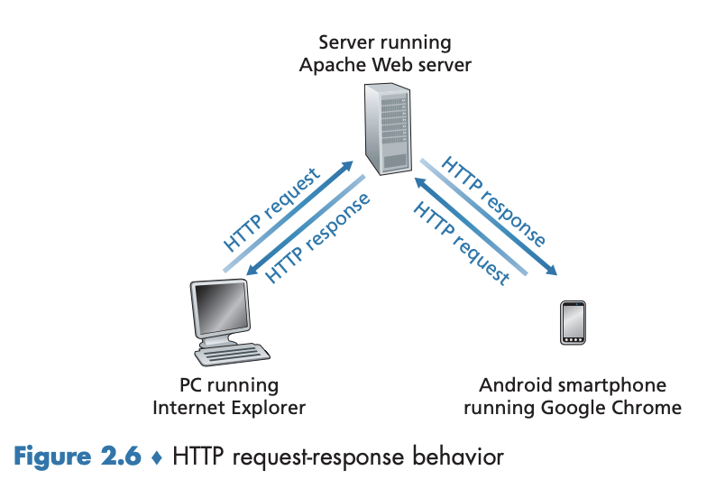
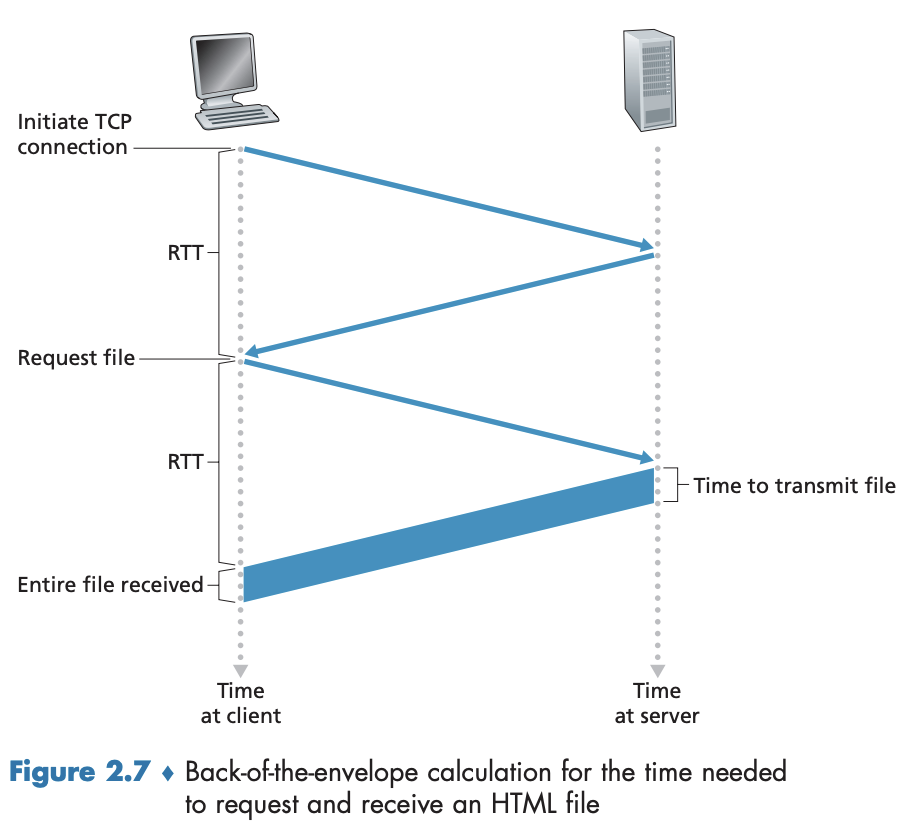
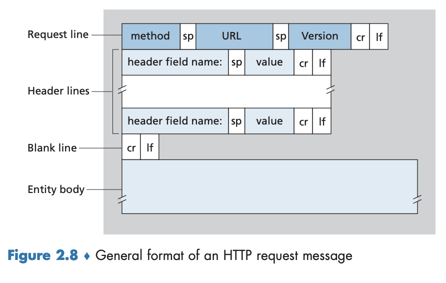
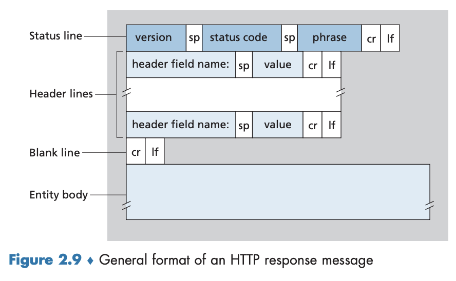
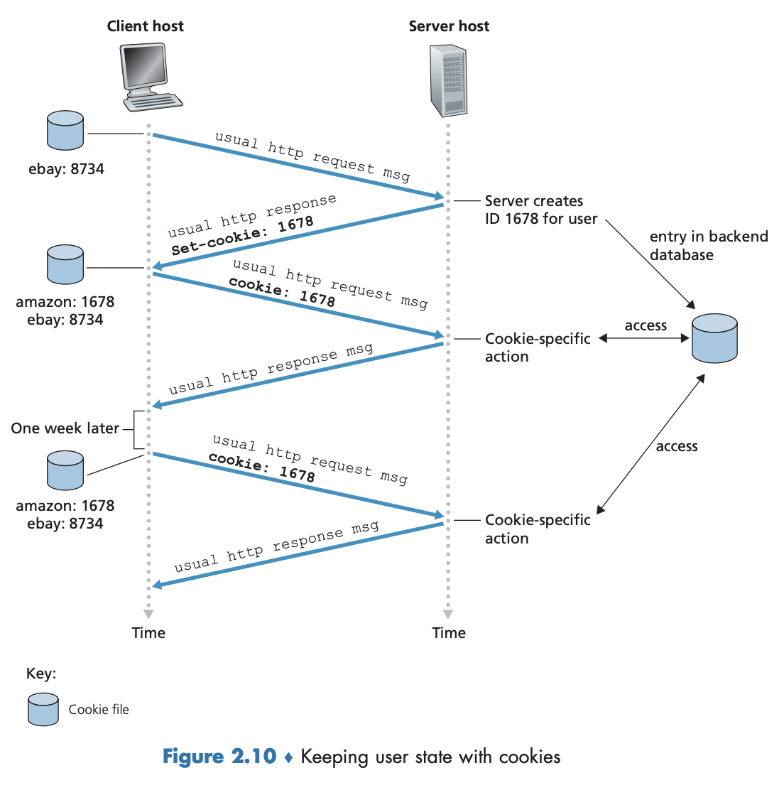
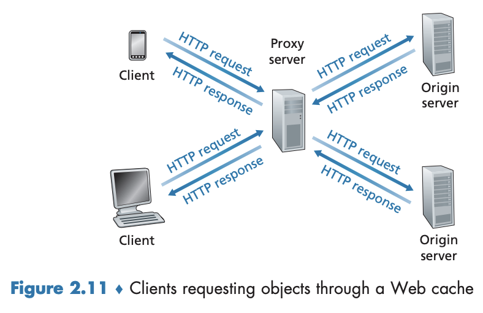
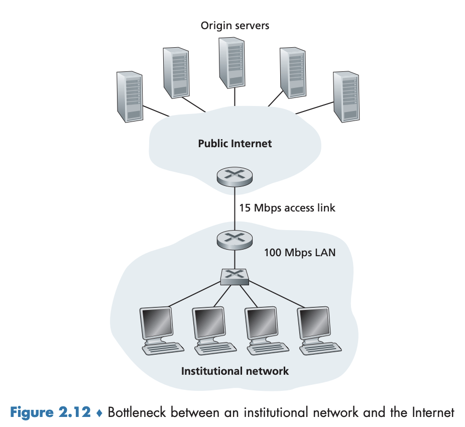
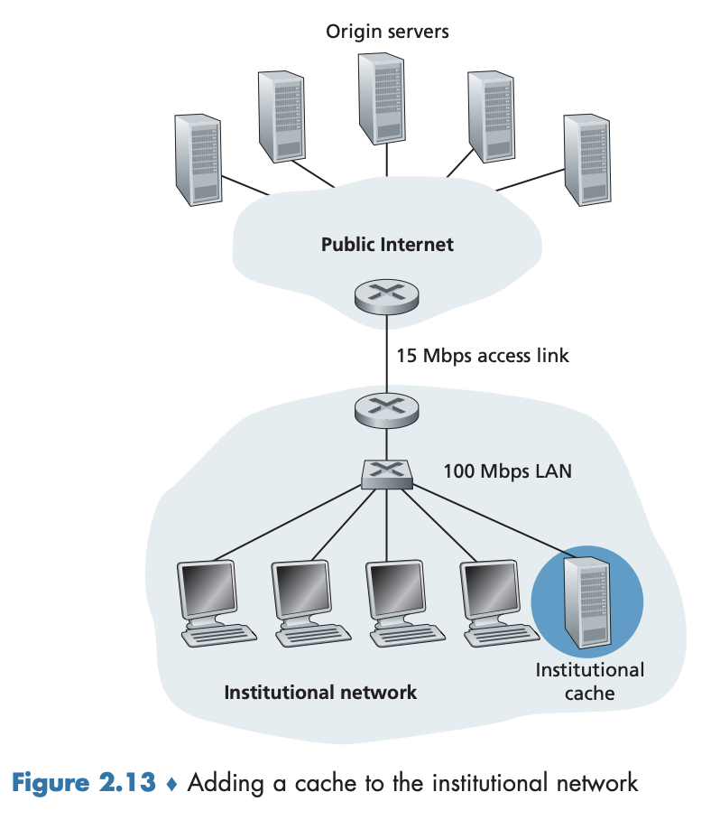

2.2 웹과 HTTP
1990년대까지 인터넷은 연구자와 학자들이 원격 로그인, 파일 전송, 뉴스 및 전자메일 교환 등에 주로 사용했으며, 대중에게는 널리 알려지지 않았다. 그러나 1990년대 초 월드와이드웹(WWW)이 등장하면서 인터넷은 일반 사용자들에게도 빠르게 확산되었다.
웹의 가장 큰 특징은 온디멘드 방식, 즉 사용자가 원하는 정보를 원하는 순간에 받을 수 있다는 점이다. 이는 라디오나 TV 방송처럼 정해진 시간에 맞춰야 하는 기존 미디어와 차별화된다. 또한, 웹은 누구나 낮은 비용으로 콘텐츠를 제공할 수 있도록 하며, 하이퍼링크와 검색 엔진이 정보 탐색을 돕는다. 사진과 비디오가 시각적 경험을 풍부하게 하고, 폼(form), 자바스크립트 등은 사용자와 웹사이트 간의 상호작용을 가능하게 한다.
이러한 웹과 관련 프로토콜들은 유튜브, 웹 기반 전자메일(예: 지메일), 인스타그램, 구글 지도 등 대부분의 모바일 인터넷 애플리케이션의 기반이 되고 있다.
2.2.1 HTTP 개요
HTTP(HyperText Transfer Protocol)
- 웹의 애플리케이션 계층 프로토콜이자 웹의 중심. RFC 문서에 정의되어 있다.
- 클라이언트, 서버 두 가지 프로그램으로 구현된다.
- 서로 HTTP 메시지를 교환하여 통신한다.
- HTTP는 메시지의 구조 및 클라이언트와 서버가 메시지를 어떻게 교환하는지에 대해 정의하고 있다.
- 웹 클라이언트가 웹 서버에게 웹 페이지를 어떻게 요청하는지, 서버가 클라이언트로 어떻게 웹 페이지를 전송하는지를 정의한다.
- 일반적인 개념은 그림 2.6에 나와있다.

- HTTP는 TCP를 전송 프로토콜로 사용한다.
- HTTP 클라이언트는 먼저 서버와 TCP 연결을 맺고, 소켓 인터페이스를 통해 데이터를 주고받는다. 클라이언트는 HTTP 요청 메시지를 소켓으로 보내고, 서버는 이를 받아 응답 메시지를 다시 클라이언트로 전송한다.
- 이 과정에서 TCP는 신뢰적인 데이터 전송을 보장하므로, 모든 HTTP 요청과 응답 메시지는 손실 없이 정확하게 전달된다. HTTP는 데이터 손실이나 재전송, 패킷 순서 정렬 같은 문제를 신경 쓸 필요가 없으며, 이는 TCP 및 하위 계층 프로토콜이 담당한다. 이를 통해 계층화의 장점을 확인할 수 있다.
- HTTP 서버는 클라이언트에 대한 정보를 유지하지 않으므로, 비상태 프로토콜(stateless protocol) 이라고 한다.
웹 페이지(Web page)
- 기본 HTML 파일 과 여러 참조 객체 로 구성된 것. 문서라고도 한다.
객체(object)
- 단순히 단일 URL로 지정할 수 있는 하나의 파일(HTML 파일, JPEG 이미지, 자바스크립트, CCS 스타일 시트 파일, 비디오 클립 등)이다.
HTML 파일과 URL
- HTML 파일은 페이지 내부의 다른 객체를 그 객체의 URL로 참조한다.
- 각 URL은 2개의 요소, 즉 객체를 갖고 있는 서버의 호스트 이름과 객체의 경로 이름을 갖고 있다.
http://www.someSchool.edu/someDepartment/picture.gif
- 여기서
.edu를 포함한 왼쪽은 호스트 이름, 오른쪽은 경로 이름이다.
웹 브라우저(Web browser)
- HTTP의 클라이언트 측을 구현한 것. 웹의 관점에서
브라우저와클라이언트라는 용어를 혼용하여 사용하기도 한다. - 요구한 웹 페이지를 보여주고 여러 가지 인터넷 항해와 구성 특성을 제공한다.
웹 서버(Web server)
- HTTP의 서버 측을 구현한 것. URL로 각각을 지정할 수 있는 웹 객체를 갖고 있다.
- 아파치(Apache), 마이크로소프트 인터넷 인포메이션 서버(Internet Information Server) 등이 있다.
2.2.2 비지속 연결과 지속 연결
각 요구/응답 쌍이 분리된 TCP 연결을 통해 보내져야 하면 애플리케이션은 비지속 연결(non-persistent connection) 이라고 하고, 모든 요구와 해당하는 응답들이 같은 TCP 연결상으로 보내져야 하면 애플리케이션은 지속 연결(persistent connection) 이라고 한다.
HTTP는 디폴트 모드로 지속 연결을 사용하지만 HTTP 클라이언트와 서버는 비지속 연결을 사용하도록 설정될 수 있다.
비지속 연결 HTTP - HTTP/1.0
웹 페이지를 서버에서 클라이언트로 전송하는 단계를 살펴보자. 페이지가 기본 HTML 파일과 10개의 JPEG 이미지로 구성되고, 이 11개의 객체가 같은 서버에 있다고 가정하자. 기본 HTML 파일의 URL은 다음과 같다.
http://www.someSchool.edu/someDepartment/home.index
연결 수행 과정은 다음과 같다.
- HTTP 클라이언트 HTTP의 기본 포트 80을 통해
www.someSchool.edu서버로 TCP 연결을 시도한다. TCP 연결과 관련하여 클라이언트와 서버에 각각 소켓이 있게 된다. - HTTP 클라이언트는 1단계에서 설정된 TCP 연결 소켓을 통해 서버로 HTTP 요청 메시지를 보낸다. 이 요청 메시지는
someDepartment/home.index경로 이름을 포함한다. - HTTP 서버는 1단계에서 설정된 연결 소켓을 통해 요청 메시지를 받는다. 저장장치로부터
someDepartment/home.index객체를 추출한다. HTTP 응답 메시지에 그 객체를 캠슐화한다. 그리고 응답 메시지를 소켓을 통해 클라이언트로 보낸다. - HTTP 서버는 TCP에게 TCP 연결을 끊으라고 한다(그러나 실제로 TCP 클라이언트가 응답 메시지를 통해 올바로 받을 때까지 연결을 끊지 않는다).
- HTTP 클라이언트가 응답 메시지를 받으면, TCP 연결이 중단된다. 메시지는 캡슐화된 객체가 HTML 파일인 것을 나타낸다. 클라이언트는 응답 메시지로부터 파일을 추출하고 HTML 파일을 조사하고 10개의 JPEG 객체에 대한 참조를 찾는다.
- 그 이후에 참조되는 각 JPEG 객체에 대해 처음 네 단계를 반복한다.
웹 브라우저는 웹 페이지를 사용자에게 표시하기 위해 서버로부터 페이지를 수신한다. HTTP는 웹 페이지의 해석 방식에 관심을 두지 않고, 클라이언트와 서버 간의 통신 프로토콜만 정의한다. HTTP/1.0은 비지속 연결을 사용하며, 각 TCP 연결은 하나의 요청과 응답만 처리한다. 그래서 이 예에서는 사용자가 웹 페이지를 요청할 때 11개의 TCP 연결이 만들어진다. 브라우저는 동시에 여러 TCP 연결을 사용할 수 있으며, 이를 통해 웹 페이지의 여러 요소를 병렬로 요청할 수 있다. 이를 통해 응답 시간을 줄일 수 있다.
RTT(round-trip time)

- 패킷이 클라이언트에서 서버로, 다시 클라이언트로 돌아오는 데 걸리는 시간이다.
- 패킷 전파 지연, 중간 라우터와 스위치에서의 패킷 큐잉 지연, 패킷 처리 지연 등을 포함한다.
- 그림 2.7처럼 사용자가 하이퍼링크를 클릭하면 TCP 연결을 시도하고, 세 방향 핸드세이크(three way handshake)’ 가 이루어진다. 이때 처음 두 과정이 끝나면 한 RTT가 계산되며 그 후 HTTP 요청 메시지가 서버로 전송되고, 서버는 HTML 파일을 전송한다. 결과적으로 총 2 RTT와 HTML 파일 전송 시간이 소요된다.
지속 연결 HTTP - HTTP/1.1
비지속 연결은 몇 가지 단점이 존재한다.
각 요청 객체에 대한 새로운 연결이 설정되고 유지되어야 한다. TCP 버퍼가 할당되어야 하고 TCP 변수들이 클라이언트와 서버 양쪽에 유지되어야 한다. 이는 수많은 클라이언트들의 요청을 동시에 서비스하는 웹 서버에게 심각한 부담을 줄 수 있다.- 각 객체는 2 RTT를 필요로 한다.
HTTP/1.1에서 지속 연결을 사용하면 서버는 응답 후 TCP 연결을 유지하며, 이후 요청과 응답은 같은 연결을 통해 전송된다. 이를 통해 전체 웹 페이지나 같은 서버의 여러 웹 페이지를 하나의 지속 연결로 전송할 수 있다. 또한, 요청은 응답을 기다리지 않고 연속적으로 전송될 수 있으며, 이를 파이프라이닝(pipelining)이라고 한다. 일반적으로 서버는 일정 시간 동안 사용되지 않으면 연결을 닫는다. HTTP의 기본 모드는 파이프라이닝을 활용한 지속 연결이다.
2.2.3 HTTP 메시지 포맷
HTTP 요청 메시지
GET /somedir/page.html HTTP/1.1
Host: www.someschool.edu
Connection: close
User-agent: Mozilla/5.0
Accept-language: fr
이 예시는 간단한 HTTP 요청 메시지지만, 분석하면 많은 정보를 얻을 수 있다. 첫째, 메시지는 일반 ASCII 텍스트로 쓰여 있어 사람이 읽을 수 있다. 둘째, 메시지는 5개의 줄로 구성되며 각 줄은 CR(carriage return)과 LF(line feed)로 구분된다. 마지막 줄 이후에는 추가적인 CR과 LF가 온다. 이 메시지는 5줄로 구성되었지만, 요청 메시지는 더 많은 줄로 구성될 수도 있고, 한 줄로만 이루어질 수도 있다. HTTP 요청 메시지의 첫 번째 줄은 요청 라인(request line) 이라고 하며, 이 후의 줄들은 헤더 라인(header line) 이라고 부른다. 요청 라인은 3개의 필드로 구성된다.
- 방식(method) 필드: GET, POST, HEAD, PUT, DELETE 등 여러 값을 가질 수 있으며, 이 예시에서는
GET방식을 사용하였다.GET방식은 URL 필드로 식별되는 객체를 요청할 때 사용된다. - URL 필드: 요청하는 리소스를 지정한다. 이 예에서는
/somedir/page.html이다. - HTTP 버전 필드: HTTP 프로토콜의 버전을 지정하며, 이 예시에서는
HTTP/1.1이다.
헤더 라인 분석
헤더 라인은 요청 메시지에서 중요한 정보를 포함하고 있다:
- Host: 요청하는 객체가 존재하는 호스트를 지정한다. 이 예시에서
www.someschool.edu이다. 이미 호스트에 TCP 연결이 되어 있어 불필요할 수 있지만, 웹 프록시 캐시에서 필요할 수 있다. - Connection: 서버에게 지속적인 연결을 원하지 않음을 알린다. →
close는 요청 후 연결을 닫기를 원한다는 의미이다. - User-agent: 요청하는 브라우저의 정보를 명시한다. 이 예시에서는
Mozilla/5.0로, 파이어폭스 브라우저다. - Accept-language: 사용자가 프랑스어 버전
fr을 원한다는 것을 서버에 전달한다. 해당 헤더가 없으면 서버는 기본 버전을 보낸다.
HTTP 요청 메시지의 구조

그림 2.8처럼 HTTP 요청 메시지는 일반적으로 요청 라인과 여러 개의 헤더 라인으로 구성된다. 요청 메시지에서 헤더 라인 다음에는 개체 몸체(entity body) 가 올 수 있다. GET 방식에서는 개체 몸체가 비어 있으며, POST 방식에서만 사용된다. POST 방식은 사용자가 폼 필드에 입력한 데이터를 서버로 전송할 때 사용된다.
예를 들어, POST 방식에서는 사용자가 입력한 데이터가 개체 몸체에 포함된다. 반면, GET 방식에서는 데이터가 URL에 포함된다. 예를 들어, GET 방식으로 monkeys와 bananas를 검색하면 URL은 www.somesite.com/animalsearch?monkeys&bananas 형태가 된다.
다른 HTTP 방식
- HEAD 방식:
GET방식과 유사하지만, 서버는 요청 객체를 보내지 않고 헤더만 응답한다. 주로 디버깅에 사용된다. - PUT 방식: 서버에 객체를 업로드하는 데 사용된다.
- DELETE 방식: 서버에 있는 객체를 삭제할 때 사용된다.
HTTP 응답 메시지
HTTP/1.1 200 OK
Connection: close
Data: Tue, 18 Aug 2015 15:44:04 GMT
Server: Apache/2.2.3 (CentOS)
Last-Modified: Tue, 18 Aug 2015 15:11:03 GMT
Content-Length: 6821
Content-Type: text/html
(데이터 데이터 데이터 데이터 데이터 ...)
위의 예시는 3개의 주요 섹션으로 나뉜다.
- 상태 라인(status line)
- 헤더 라인(header lines)
- 개체 몸체(entity body)
상태 라인 분석
상태 라인은 프로토콜 버전, 상태 코드, 상태 메시지를 포함하며, 이 예시에서는 HTTP/1.1 200 OK로 서버가 HTTP/1.1을 사용하고 모든 것이 정상임을 나타낸다.
헤더 라인 분석
Connection: 클라이언트가 메시지를 보낸 후 TCP 연결을 닫도록 요청한다.Date: HTTP 응답이 서버에서 생성된 날짜와 시간을 표시한다. 이는 객체의 생성이나 수정 시간이 아니라 응답 메시지가 서버에서 보내진 시간을 의미한다.Server: 메시지를 생성한 서버 정보를 나타낸다. 이 예시에서는 Apache 서버이다.User-agent헤더와 비슷한 역할을 한다.Last-Modified: 객체가 마지막으로 수정된 시간과 날짜를 나타낸다. 이 헤더는 로컬 클라이언트와 네트워크 캐시 서버(프록시 서버)에서 객체를 캐시하는 데 중요하다.Content-Length: 응답 메시지에서 전송되는 객체의 바이트 수를 명시한다.Content-Type: 개체 몸체 내부의 객체 타입을 나타낸다. 이 예시에서는text/html로, 응답 데이터가 HTML 형식임을 알린다. 객체의 타입은 파일 확장자가 아니라Content-Type헤더로 정의된다.
개체 몸체
개체 몸체는 실제로 서버가 클라이언트에게 전송하는 데이터를 포함하며, 여기서는 데이터 데이터 데이터 데이터 데이터 ...로 표시된다.
상태 코드
 그림 2.9에 있는 응답 메시지의 일반 포맷을 보면, 응답 메시지의 이전 예와 일치한다는 것을 알 수 있다. 이어 상태코드를 살펴보자.
200 OK: 요청이 성공했고, 정보가 응답으로 보내졌다.301 Moved Permanently: 요청 객체가 영원히 이동되었다. 새로운 URL은 응답 메시지의Location:헤더에 나와 있다. 클라이언트 소프트웨어는 자동으로 이 새로운 URL을 추출한다.400 Bad Request: 서버가 요청을 이해할 수 없다는 일반 오류 코드다.404 Not Found: 요청 문서가 서버에 존재하지 않는다.505 HTTP Version Not Supported: 요청 HTTP 프로토콜 버전을 서버가 지원하지 않는다.
HTTP 응답 메시지 확인 방법
HTTP 응답 메시지를 확인하는 것은 간단하고 중요하다. 먼저 원하는 웹 서버에 텔넷을 통해 접속한 후, 해당 서버에 요청 메시지를 보내면 된다. 예를 들어, 유닉스 컴퓨터에서 다음과 같이 입력하여 요청할 수 있다. (마지막 줄 입력 후 엔터를 두 번 쳐야 한다)
telnet gaia.cs.umass.edu 80
GET /kurose ross/interactive/index.php HTTP/1.1
Host: gaia.cs.umass.edu
위 명령은 gaia.cs.umass.edu 호스트의 80번 포트로 TCP 연결을 설정하고, GET 요청을 보내는 것이다. 이 요청에 대한 응답으로, 웹 서버에서 기본 HTML 파일을 포함하는 HTTP 응답 메시지가 반환된다. 만약 응답 메시지에서 객체 자체를 받지 않고 HTTP 메시지 줄만 보고 싶다면, GET을 HEAD로 바꾸면 된다.
브라우저와 웹 서버의 헤더 라인 결정
- 브라우저: 브라우저는 요청 메시지에 포함할 헤더 라인을 결정할 때 브라우저의 종류, 사용자 설정, 그리고 해당 객체가 이미 캐시되어 있는지 여부에 따라 결정한다.
- 웹 서버: 웹 서버도 응답 메시지에 포함할 헤더 라인을 결정할 때 여러 요소(제품, 버전, 설정 등)에 영향을 받는다. 이를 통해, 각기 다른 환경에서 HTTP 요청과 응답이 어떻게 구성되고 처리되는지를 이해할 수 있다.
2.2.4 사용자와 서버 간의 상호작용: 쿠키
HTTP 서버는 상태를 유지하지 않는 특성 덕분에 고성능의 웹 서버를 구축할 수 있지만, 사용자를 식별하고 맞춤형 콘텐츠를 제공하려면 상태를 유지해야 한다. 이를 위해 쿠키(cookie) 기술이 사용된다. 쿠키는 사용자를 추적하고, 웹사이트가 사용자를 인식하거나 상태 정보를 저장하는 데 유용하다.
쿠키의 구성 요소
쿠키는 다음 네 가지 요소로 구성된다:
- HTTP 응답 메시지의 쿠키 헤더 라인 (Set-Cookie)
- HTTP 요청 메시지의 쿠키 헤더 라인 (Cookie)
- 사용자의 브라우저에서 관리되는 쿠키 파일
- 웹사이트의 백엔드(back-end) 데이터베이스
쿠키 동작 예시

예를 들어, 수잔이 처음으로 아마존닷컴에 접속했다고 가정하자. 아마존 웹 서버는 그녀를 식별할 수 있는 고유 식별번호를 생성하고, 이를 백엔드 데이터베이스에 저장한다. 그 후 아마존은 응답 메시지에 Set-cookie: 1678과 같은 쿠키 헤더를 포함시켜 수잔의 브라우저로 전송한다. 수잔의 브라우저는 이를 쿠키 파일에 저장하고, 이후 아마존 웹사이트를 방문할 때마다 쿠키를 통해 이전에 방문했던 정보를 서버에 전달한다. 예를 들어, 다음 HTTP 요청에서 Cookie: 1678을 포함하여 서버에 보낸다.
이렇게 아마존 서버는 수잔의 방문 기록을 추적할 수 있으며, 쇼핑 카트 서비스나 맞춤형 추천을 제공할 수 있다. 만약 수잔이 일주일 후 다시 아마존에 접속하면, 브라우저는 이전에 저장된 쿠키를 통해 그녀의 정보를 전달하고, 아마존은 그녀의 이전 방문 기록을 바탕으로 제품을 추천할 수 있다.
쿠키와 사용자 식별
쿠키는 사용자가 사이트를 처음 방문할 때 제공된 정보를 바탕으로 사용자를 식별하는 데 사용된다. 브라우저는 서버에 쿠키 정보를 전달하여 사용자가 이전에 누구인지 확인할 수 있다. 이 방식은 세션 계층을 생성하고 사용자가 로그인 상태를 유지할 수 있도록 돕는다.
쿠키와 개인 정보 보호 논란
쿠키는 사용자의 인터넷 쇼핑 경험을 간소화하고, ’원 클릭 쇼핑’과 같은 서비스를 제공하는 데 유용하지만, 사용자의 개인 정보 보호에 대한 우려를 불러일으킨다. 쿠키와 사용자 계정 정보를 결합하면 웹사이트는 사용자의 많은 정보를 알게 되며, 이 정보는 제3자에게 판매될 수 있어 사생활 침해의 우려가 있다.
2.2.5 웹 캐싱
웹 캐시(프록시 서버)는 기점 웹 서버(origin Web server)를 대신하여 HTTP 요청을 처리하는 네트워크 개체이다. 자체 저장 디스크를 통해 최근 호출된 객체의 사본을 저장 및 보존한다. 그림 2.11처럼 브라우저는 HTTP 요청을 웹 캐시로 먼저 보내도록 설정될 수 있다.  웹 캐시 동작 과정은 다음과 같다:
- 브라우저 → 웹 캐시: 브라우저는 웹 캐시와 TCP 연결을 설정하고 HTTP 요청을 보낸다.
- 캐시에 객체가 있는 경우: 웹 캐시는 저장된 객체의 사본을 브라우저로 전송한다.
- 캐시에 객체가 없는 경우:
- 웹 캐시는 기점 서버
www.someschool.edu와 TCP 연결을 설정한다. - 기점 서버에 HTTP 요청을 보내고, 응답을 받아 객체를 저장한 후 브라우저로 전송한다.
- 웹 캐시는 기점 서버
- 객체 전송: 웹 캐시는 저장한 객체를 브라우저로 전송하며, 이후 동일한 요청이 있을 경우 빠르게 응답할 수 있다.
웹 캐시는 서버와 클라이언트 역할을 동시에 수행한다.
- 브라우저 요청을 처리하는 서버 역할
- 기점 서버에 요청을 보내는 클라이언트 역할
웹 캐시 설치 및 활용
- 일반적으로 ISP(인터넷 서비스 제공자) 또는 대학, 기업에서 설치
- 캠퍼스 네트워크나 가정용 ISP(예: Comcast)에서 웹 캐시를 사용하여 브라우저가 이를 가리키도록 설정
웹 캐싱의 장점
- 응답 시간 단축
- 특히 클라이언트와 기점 서버 사이의 병목 대역폭이 클라이언트와 캐시 사이의 병목 대역폭에 비해 매우 작을 때 더욱 효과적이다.
- 클라이언트와 웹 캐시 간의 연결이 빠를 경우, 요청된 객체를 신속하게 제공 가능
- 네트워크 트래픽 절감
- 동일한 요청을 반복적으로 기점 서버에 보내지 않음
- 기관(기업, 대학)에서 인터넷 대역폭 사용량을 줄여 비용 절감
- 전체 인터넷 트래픽 감소로 애플리케이션 성능 개선
→ 웹 캐시는 인터넷 성능 최적화와 비용 절감을 위해 널리 사용되고 있다.
캐시 서버의 장점 - 예시
그림 2.12에 나타난 예를 살펴보자. 
❓두 네트워크(기관 네트워크와 그 외의 공중 인터넷)에서 기관 네트워크는 고속의 LAN이며 기관 네트워크에 있는 라우터와 인터넷에 있는 라우터는 15 Mbps 회선에 연결되어 있다. 기점 서버는 인터넷에 연결되어 있지만 전역에 걸쳐 위치하게 된다. 평균 객체의 크기가 1 Mb이고 기관 브라우저로부터 기점 서버에 대한 평균 요청 비율이 초당 15요청이라고 가정하자. 그리고 HTTP 메시지 요청이 무시할 만큼 작으므로 네트워크나 접속 회선(기관 라우터에서 인터넷 라우터 사이의 접속 회선)에 어떤 트래픽도 발생시키지 않는다고 가정하자. 또한 그림 2.12에서 접속 회선의 인터넷 부분 라우터가 HTTP 요청(IP 데이터그램을 통해)을 전달하고 응답(일반적으로 많은 IP 데이터그램을 통해)을 받을 때까지 평균 소요 시간은 2초라 가정하자. 통상 이러한 지연을 ’인터넷 지연’이라 한다.
→ 총 응답 시간(브라우저의 요청으로부터 객체 수신까지 걸리는 시간)은 LAN 지연과 접속 지연(라우터 간의 지연), 인터넷 지연의 합과 같다. LAN의 트래픽 강도는 다음과 같다. $$(15\text{요청/초})\times(1\text{ Mb/요청})/(100\text{ Mbps})=0.15$$ → 접속 회선(인터넷 라우터에서 기관 라우터 사이)의 트래픽 강도는 다음과 같다. $$(15\text{요청/초})\times(1\text{ Mb/요청})/(15\text{ Mbps})=1$$ → 일반적으로 LAN의 트래픽 강도 0.15는 많아야 수십 ms의 지연을 야기하므로 LAN 지연을 무시할 수 있다. 그러나 접속 회선의 경우 1이므로 지연은 매우 커지고 한없이 증가한다. 따라서 평균 응답 시간은 대략 몇 분이 걸리므로 기관 사용자에게 적합하지 않다. 접속 회선을 100 Mbps로 늘리는 방법이 있지만(이렇게 할 시 총 응답 지연은 대략 2초) 많은 비용이 들어갈 것이다.

❓그림 2.13처럼 접속 회선을 증설하지 않고 기관 네트워크에 웹 캐시를 설치하면 어떻게 될까?
→ 적중률(캐시가 만족시킨 요청 비율)은 일반적으로 0.2~0.7이다. 편의상 0.4의 적중률을 제공한다고 하자. 그렇다면 요청의 40%는 캐시에 의해 즉시(10ms 이내) 만족되며, 60%의 요청은 기점 서버에 의해 만족되어야 한다. 트래픽 강도는 여기서 1.0에서 0.6으로 감소된다. 일반적으로 0.8 미만의 트래픽 강도는 작은 지연(15 Mbps 회선에서 수십 ms 정도)에 속한다. 2초의 인터넷 지연에 비하면 무시할 수 있다. 이들을 고려한 평균 지연은 다음과 같다. $$0.4\times(0.01\text{초})+0.6\times(2.01\text{초})$$ 이것은 1.2초가 조금 넘는 지연이다. 기관이 인터넷을 위한 회선을 증설할 필요가 없으며 웹 캐시를 추가적으로 구입해야 겠지만 일반적으로 훨씬 저렴하다. 많은 캐시가 저렴한 PC 에서 실행되는 공개 소프트웨어를 사용한다.
웹 캐시의 예시 - 콘텐츠 전송 네트워크(Content Distribution Network, CDN)
여기서는 간단히 언급만 한다.
- CDN의 사용을 통해, 웹 캐시는 인터넷에서 점진적으로 중요한 역할을 하고 있다.
- CDN 회사는 인터넷 전역을 통해 많은 지역적으로 분산된 캐시를 설치하고 있으며, 이를 통해 많은 트래픽을 지역화하고 있다.
- 종류로는 공유 CDN(예: 아카마이(Akamai)), 라임라이트(LimeLight)), 전용 CDN(예: 구글, 마이크로소프트)이 있다.
조건부 GET(Conditional GET)
웹 캐싱은 새로운 문제를 야기하는데, 캐시 내부네 있는 객체의 복사본이 새것이 아닐 수 있다는 점이다. 다시 말해, 복사본이 클라이언트에 캐싱된 이후에 웹 서버에 있는 객체가 갱신되었을 수도 있다는 것이다. 조건부 GET 메시지는 다음 특성을 가지고 있다.
GET방식을 사용한다.If-Modified-Since:헤더 라인을 포함하고 있다.
조건부 GET의 작동 예시
첫째, 브라우저의 요청을 대신해 프록시 캐시는 요청 메시지를 웹 서버로 보낸다.
GET /fruit.kiwi.gif HTTP/1.1
Host: www.exotiquecuisine.com
둘째, 웹 서버는 캐시에게 객체를 가진 응답 메시지를 보낸다.
HTTP/1.1 200 OK
Date: Sat, 3 Oct 2015 15:39:29
Server: Apache/1.3.0 (Unix)
Last-Modified: Wed, 9 Sep 2015 09:23:24
Content-Type: image/gif
(데이터 데이터 데이터 데이터 데이터...)
캐시는 요청하는 브라우저에게 객체를 보내주고 자신에게도 객체를 저장한다. 중요한 것은 캐시가 객체와 더불이 마지막으로 수정된 날짜를 함께 저장한다는 것이다.
셋째, 일주일 후에 다른 브라우저가 같은 객체를 캐시에게 요청하면 객체는 여전히 저장되어 있다. 이 객체는 지난주에 웹 서버에서 수정되었으므로 브라우저는 조건부 GET으로 갱신 조사를 수행한다. 특히, 브라우저는 다음과 같은 내용을 보낸다.
GET /fruit.kiwi.gif HTTP/1.1
Host: www.exotiquecuisine.com
If-modified-since: Wed, 9 Sep 2015 09:23:24
If-modified-since: 헤더 라인의 값이 일주일 전에 서버가 보낸 Last-Modified: 헤더 라인의 값과 정확히 일치한다. 이 조건부 GET는 서버에게 그 객체가 명시된 날짜 이후 수정된 경우에만 그 객체를 보낼 것을 말하고 있다. 그 객체가 9 Sep 2015 09:23:24 이후 변경되지 않았다고 가정하자.
넷째, 그러면 웹 서버는 클라이언트에게 다음과 같은 응답 메시지를 보낸다.
HTTP/1.1 304 Not Modified
Date: Sat, 10 Oct 2015 15:39:29
Server: Apache/1.3.0 (Unix)
(빈 개체 몸체)
조건부 GET에 대한 응답으로 웹 서버가 여전히 응답 메시지를 보내지만 응답 메시지에 요청된 객체를 포함하지 않음을 볼 수 있다. 요청 메시지를 포함하는 것은 대역폭을 낭비하는 것이고, 특히 그 개체가 크다면 사용자가 느끼는 응답 시간이 증가된다. 이 마지막 응답 메시지는 304 Not Modified 상태 라인을 갖고 있으며, 이는 클라이언트에게 요청 객체의 캐싱된 복사본을 사용하라는 것을 의미한다.
2.2.6 HTTP/2
HTTP/2 요약
HTTP/2는 2015년에 표준화된 새로운 HTTP 프로토콜로, HTTP/1.1의 단점을 개선하였다. 2020년 기준, 주요 웹사이트의 40%가 HTTP/2를 지원하며, 크롬, 사파리 등 대부분의 브라우저도 이를 지원한다.
HTTP/2의 주요 목표
- 멀티플렉싱: 하나의 TCP 연결에서 여러 요청/응답을 동시에 처리하여 지연 감소.
- 요청 우선순위화: 중요한 요청을 먼저 처리.
- 서버 푸시: 추가 요청 없이 서버가 클라이언트에 리소스를 미리 전송.
- HTTP 헤더 압축: 데이터 전송량 감소.
HTTP/1.1의 문제점
- 지속적인 TCP 연결을 이용하지만, HOL(Head of Line) 블로킹 문제가 발생.
- 대용량 비디오 등의 객체가 병목을 초래하여 작은 객체들의 로딩이 지연됨.
- 이를 해결하기 위해 병렬 TCP 연결(최대 6개)을 사용, 하지만 네트워크 자원을 비효율적으로 사용.
HTTP/2의 해결책
- 단일 TCP 연결에서 멀티플렉싱 지원, 병렬 TCP 연결 없이도 여러 개의 객체를 동시에 전송 가능.
- TCP 혼잡 제어 최적화, 불필요한 소켓 수를 줄이고 네트워크 자원 활용을 개선.
- HOL 블로킹 문제를 해결하여 빠른 웹 페이지 로딩을 가능하게 함.
HTTP/2는 HTTP/1.1의 메소드, 상태 코드 등은 유지하지만, 데이터 전송 방식과 포맷을 개선하여 성능과 효율성을 크게 향상시켰다.
HTTP/2 프레이밍
웹 페이지를 전송하기 위해 오직 하나의 TCP 연결을 사용하게 될 경우에 HTTP/2는 HOL 블로킹을 피하기 위해 신중하게 구현된 메커니즘이 필요하다.
- 모든 데이터를 작은 프레임 단위로 분할
- 단일 TCP 연결에서 요청/응답 메시지를 인터리빙(교차 전송)
- 예제:
- 비디오 클립(1000 프레임) + 작은 객체 8개(각 2 프레임)
- HTTP/1.1: 비디오 클립 전송 완료 후 작은 객체 전송 (총 1016 프레임 대기)
- HTTP/2: 비디오 클립 1프레임 → 작은 객체 1프레임씩 순차 전송 → 전체 전송 시간 단축
→ HTTP 메시지를 독립된 프레임들로 쪼개고 인터리빙하고 반대편 사이트에서 재조립하는 것이야말로 HTTP/2의 가장 중요한 개선점이다.
프레이밍 서브 계층
HTTP/2 프로토콜의 프레임으로 구현된 다른 프레이밍 서브 계층에 의해 이루어진다.
- HTTP 메시지를 프레임 단위로 쪼개고 재조립(응답의 해더 필드와 메시지 본문을 각각 쪼갬).
- 응답 프레임들은 서버의 프레이밍 서브 계층에 의해 인터리빙된 후 하나의 지속적인 TCP 연결상에서 전송된다.
- 프레임들이 클라이언트에 도착하면 프레이밍 서브 계층에서 처음 응답 메시지로 재조립되며 브라우저에 의해 처리된다.
- 마찬가지로, 클라이언트의 HTTP 요청은 프레임으로 쪼개지고 인터리빙된다.
- 그 외에도 프레이밍 서브 계층은 프레임을 바이너리 인코딩한다.
- 파싱 효율성 증가
- 프레임 크기 감소
- 오류 복원력 향상
메시지 우선순위화(Message Prioritization) 및 서버 푸싱
메시지 우선순위화 (Message Prioritization)
- 요청 간 우선순위 조정 가능 → 애플리케이션 성능 최적화
- 프레이밍 서브 계층이 메시지를 병렬적인 데이터 스트림으로 분할
- 우선순위 지정 방식
- 각 요청에 1~256 사이의 가중치(weight)를 부여 (높을수록 우선순위 높음)
- 서버는 가장 높은 우선순위의 요청을 먼저 처리
- 클라이언트는 메시지 간 의존성을 명시 가능 (요청 간 관계 설정)
서버 푸싱 (Server Push)
- 클라이언트 요청 없이도 추가 객체를 사전 전송(
푸시) 가능 - HTML 기반 페이지가 웹 페이지를 완벽하게 구동시킬 필요가 있는 객체들을 가리킬 수 있기에 가능함.
- 예제: HTML 페이지 로드 과정
- 클라이언트가 HTML 페이지 요청
- 서버는 HTML 응답 전송(미리 HTML 페이지를 분석할 수 있음)
- 추가적으로 해당 HTML에서 필요한 CSS, JS, 이미지 파일 등을 미리 푸시(
해당 객체들에 대한 요청이 도착하기도 전에)
- 이점 - 클라이언트가 추가 요청을 보내기 전 필요한 리소스를 미리 제공
- 네트워크 지연 최소화 → 페이지 로딩 속도 향상
HTTP/3
- QUIC 위에서 작동하도록 설계된 새로운 HTTP 프로토콜
- 메시지 인터리빙과 같은 HTTP/2 특징들은 QUIC에 의해 포함되며 HTTP/3을 위한 휠씬 더 간단한 설계를 가능하게 할 것이다.
QUIC
- 새로운 트랜스포트 프로토콜이며 UDP 프로토콜 위에 위치하는 애플리케이션 계층에 구현되어 있다.
- 메시지 멀티플렉싱(인터리빙), 스트림별 흐름 제어, 저지연 연결 확립과 같은 HTTP에 의미 있는 여러 특징을 갖는다. → 3장에서 더 자세히 다룰 예정